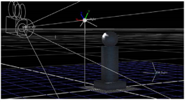
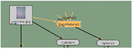
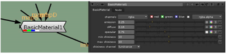
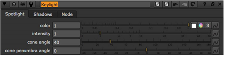
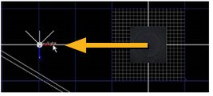
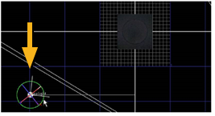
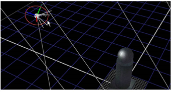

Nuke 包括照明工具，以增强 3D 场景中包含的板和图像中的现有照明。还包括用于控制 3D 工作空间中对象属性的基础曲面工具。
这些工具不是为了取代真正的 3D 照明和曲面的使用而设计的，但是它们绝对可以帮助你在不将元素发送回 3D 应用程序的情况下，快速调整设置。

Nuke 的照明对象将照明和表面属性引入场景。当场景没有照明对象时，所有曲面都将以相同的属性和 “亮度” 级别进行照明。
在以下步骤中，您将首先添加定义对象表面特性的节点，然后添加灯光对象来照亮它们。
| 1。 | 单击节点图中的空位置以取消选择所有节点。然后，选择 3D> 着色器> 基本材质 . |
| 2. | 拖动 BasicMaterial1 节点到 concrete.jpg 和之间的连接器上 Sphere1 . |

在 “基本材质控制” 面板中，可以看到用于定义曲面的发光量、扩散和高光特性的参数。您可以通过将图像连接到 地图 (镜面), MapE (排放)，和 MapD (漫反射) 连接器，但本示例不需要此选项。

| 3. | 设置灯光 排放 控制至 0.25 。设置 扩散 到 0.18 ,和 镜面 到 0.75 . |
| 4. | 调整 Min shininess 和 最大光泽 用于调整镜面高光质量的值。再次，似乎什么也没发生!那是因为你还没有在场景中添加灯光。所有曲面都以相同的亮度照明，因此没有镜面高光或其他可控制的光属性可见。这不是很激动人心，但不要担心 -- 你很快就可以在场景中添加一盏灯。 |
| 5. | 制作两份副本 BasicMaterial1 节点并在之前附加副本 Cylinder1 和之前 Cube1 . |
| 1。 | 选择 3D> 灯光> 聚光灯 并将灯光节点连接到 场景 2 节点。 |
| 2. | 在 Spotlight1 控制面板，将灯光重命名为 键光 . |

| 3. | 切换到 顶部 查看并拖动 x 轴控制柄 (红色)，将灯光向左移动。 |

| 4. | 拖动 z 轴控制柄 (蓝色)，将光线更靠近屏幕的底部边缘。然后，按 Ctrl 或 命令 关键点并旋转灯光以面向支柱对象。 |

| 5. | 切换到 3D (V) 查看并旋转视图，以便可以看到键光和支柱几何图形。 |
| 6. | 拖动 y 轴控制柄 (绿色) 将灯光向上移动到支柱上方。 |
| 7. | 按下 Ctrl 或 命令 键并向下旋转光线以照亮柱子。 |

这是照明和表面的基本设置，但是还有其他用于更复杂设置的工具。请参阅 3D 合成 有关 3D 照明和曲面工具的更多信息。
|
|